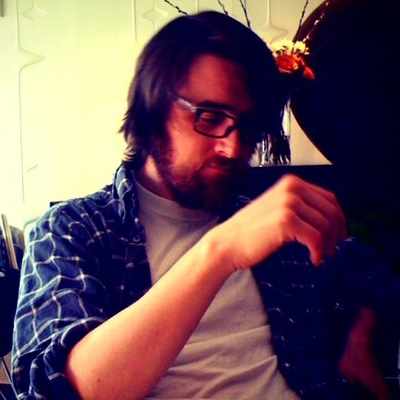
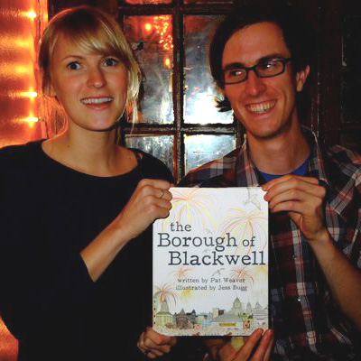

Phone Booth Press was founded in 2010 by Jessica Bugg, Patrick Weaver, and Zoë Roller. PBP is based in New York City and books ARE WERE AVAILABLE AT bookbook, an independent bookstore in the West Village.
Phone Booth Press Authors and Illustrators:
Phone Booth Press Authors and Illustrators:
Brendan Byrne lives and works in New York City. His fiction regularly appears in FLURB, and his criticism has appeared in The Rumpus, The Brooklyn Rail, L Magazine, the New York Press, and Strange Horizons. He is the editor of The Orphan, a webzine devoted to the otherwise unpublishable. He tweets as @brendancbyrne.

Pat Weaver and Jess Bugg live respectively in New York, NY and Austin, TX. They just want to be on the side that's winning.
